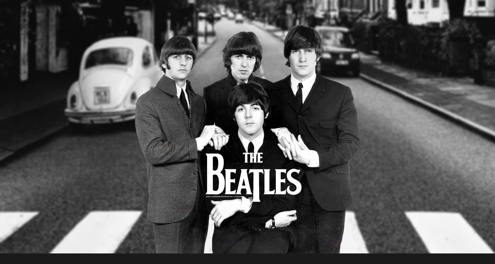

De um porão apertado no Cavern Club às maiores plateias do planeta, a trajetória dos Beatles atravessa quatro personalidades diferentes, uma amizade e uma década inteira de reinvenção musical. Essa é a história de como quatro garotos de Liverpool se tornaram lenda.
Ler biografia →Álbuns de Estúdio
Milhões de Discos Vendidos
Uma Década
Integrantes, Uma Lenda
Em pouco mais de sete anos de carreira, os Beatles atravessaram fases completamente distintas: do pop cru dos primeiros singles à experimentação psicodélica de Sgt. Pepper's. Cada disco é uma fotografia de uma banda em constante transformação.
Ver discografia →
John Lennon, Paul McCartney, George Harrison e Ringo Starr. Quatro personalidades opostas que, juntas, criaram uma química impossível de repetir. Conheça a trajetória individual de cada um deles antes, durante e depois dos Beatles.
Conhecer os integrantes →Mais de 600 milhões de discos vendidos e uma influência que atravessou o rock, o pop e praticamente todo gênero musical que veio depois. Décadas após o fim da banda, o impacto dos Beatles continua sendo redescoberto por novas gerações.
Ver o legado →Realize seu sonho. Você mesmo vai ter de fazer isso... eu não posso acordar você. Você é quem pode se acordar.